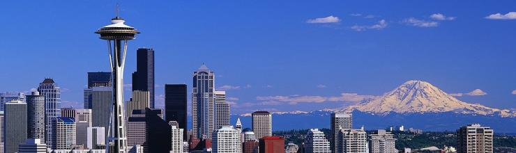

Transportation
Transportation

The Summit is being held at the University of Washington in the U District neighborhood of Seattle with great public transportation options available.
The Hotel Deca and Mary Gates Hall, the building where the sessions will be held, are less than a ten minute walk apart.
The Metro Bus Route 49 (mobile apps) is the best way to get from the hotel to the Party Saturday night.
GDO Wiki: Ride sharing to/from Seattle
Traffic Reports
- WSDOT: 520 Bridge closure Enter date range
- Seattle Times: Traffic
- City of Seattle: Traffic Cameras
- City of Seattle: Traveler information
Transit services & UW parking
- University District bus routes
- Download Bus route maps
- Where is your bus?
- Sounder Train (Lakewood-Tacoma-Seattle-Edmonds-Everett)
- Amtrak: Seattle
- UW visitor parking
Taxi services
- Lyft Seattle
- Uber Seattle
- Stita Taxi: (206) 246-9999
- Yellow Cab: (206) 622-6500
- Orange Cab: (206) 957-0866 (206) 522-8800
- Farwest Taxi: (206) 622-1717